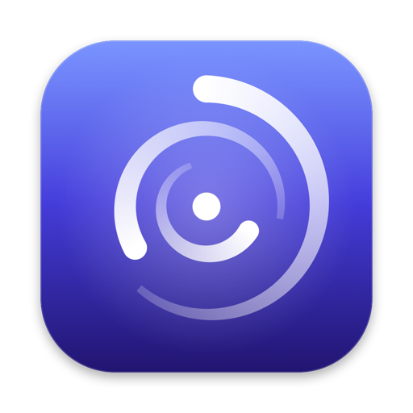
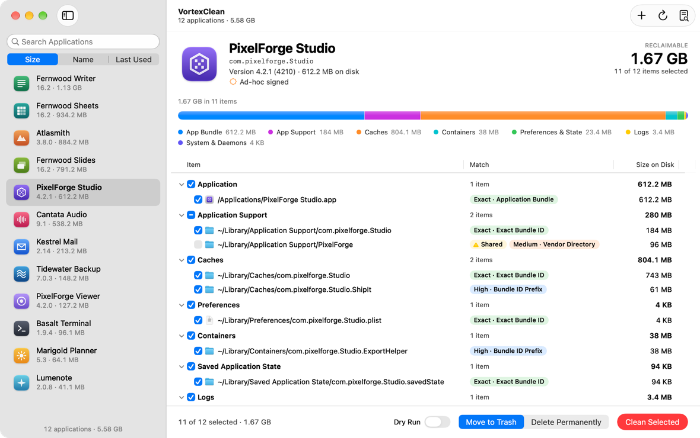
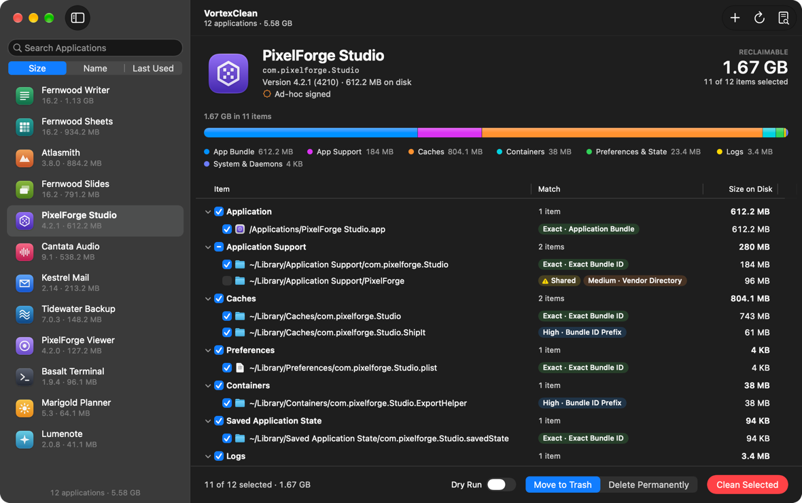

Uninstall all of it. Touch nothing else.
VortexClean finds what a Mac app left behind, shows the evidence for each match, and leaves shared and protected files alone. It is written in C++20 and Objective-C++, with an AppKit interface built by hand.


Inspect a cleanup before it happens
Three invented apps, scanned by the real engine on a synthetic disk. Tick items, run a simulated clean, and read the audit log it would write. It runs in this page and can't see your Mac.
Checked path for path against Apple’s own tool
Package installers leave a receipt that lists every file they wrote. The format is undocumented and binary, so VortexClean has its own parser. The numbers here were measured on one Mac, not estimated.
614,347
paths read from 139 real receipts. Compared with lsbom, 0 differ.
The first 32 bytes of a receipt
42 4f 4d 53 74 6f 72 65magic, “BOMStore”00 00 00 01version 100 00 00 6d109 blocks00 00 49 b9block table at 0x49b900 00 03 88904 bytes long00 00 49 7dvariables at 0x497d00 00 00 3c60 bytes long
From there the parser follows the variable table to the Paths tree, steps down to the leftmost leaf, and walks the leaf chain. Every offset is bounds-checked, every page is visited once, and a name that could escape the install folder is dropped.
What it refuses to count as evidence
| It looks like a match | What happens |
|---|---|
~/Library/Caches/com.fernwood.sheets while removing Writer | Skipped. It belongs to another installed app. |
| An identifier registered to an app somewhere else on the disk | Skipped, after asking LaunchServices who owns it. |
~/Library/Application Support/Fernwood | Listed unchecked, with the apps that share it. |
| “Backup”, “Helper”, “Desktop”, or any name under four characters | Too generic to match on. |
com.apple.… | Never matched, unless a verified third-party receipt lists that exact item. |
| A folder with another application inside it | Never offered as one unit. |
Measured
- Compiler warnings
- 0
-Wall -Wextra -Wpedanticin Debug, Release and sanitizer builds- Test cases
- 82
- in 7 suites, all passing in all three builds
- ASan and UBSan reports
- 0
- from the suites and the instrumented interface
- Leaks
- 0
- in every suite under
leaks(1) - Idle CPU
- < 0.1%
- 0.06 to 0.08 s of CPU over 90 s, window open
- Third-party dependencies
- 0
otool -Llists system frameworks and libraries only
macOS 27.2 on arm64, Apple clang 21. Not exercised end to end: administrator removal, which needs a real password, and macOS versions before 27.
It stays inside macOS security
An uninstaller is a program that deletes things. These are the limits it keeps.
- System Integrity Protection
- Protected locations are never offered, even when a receipt lists them, and the deletion engine checks again right before it acts. An item it has to refuse is recorded as
skipped_sip. - Full Disk Access
- macOS hides some folders from every app. When something could not be read, VortexClean says so, marks sizes as lower bounds, and links to the right Settings pane. It does not work around the restriction.
- APFS clones
- Cloned files share blocks in a way the file system does not report. The space you get back can be smaller than the size shown.
- Trash by default
- Items go to the Trash, where you can put them back. Permanent deletion is a separate mode with its own acknowledgement, and its button stays disabled until you tick it.
- Dry run and audit log
- A dry run validates and measures without touching anything. Every run, dry or not, writes a JSON report of each item, its status and the reason it matched.
- Symbolic links
- Links are removed, never followed. Deletion is anchored to open directory descriptors, so a path swapped halfway through cannot redirect it.
Build it yourself
You need CMake 3.24 or later and the Xcode Command Line Tools, which xcode-select --install sets up. Full Xcode is not required.
-
Get the source
git clone https://github.com/berkayceylan/VortexClean.git cd VortexClean -
Configure and build
cmake -S . -B build/release -DCMAKE_BUILD_TYPE=Release cmake --build build/release -j8 -
Run the tests
ctest --test-dir build/release --output-on-failure -
Open the app
open build/release/VortexClean.app
About signing
The build is ad-hoc signed and not notarized. A copy you build yourself opens normally. Gatekeeper blocks a copy that was downloaded or sent from another Mac, so build it where you want to use it. Because an ad-hoc signature belongs to one exact binary, macOS may ask for Full Disk Access again after a rebuild.